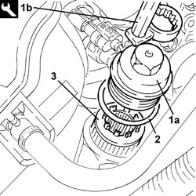
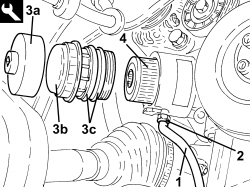
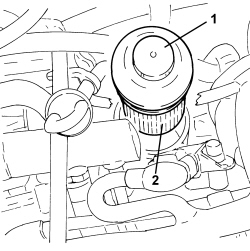
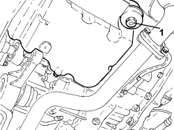

1084B30 ENGINE OIL FILTER - R.R
- Path
- Procedures > 10 ENGINE > 1084 ENGINE LUBRICATION > 1084B ENGINE OIL LUBRICATION CIRCUIT > 1084B30 ENGINE OIL FILTER - R.R
- Kind
- repair procedure (removal / refitting; the operation number is the code)
- Applies to
- engines: 1.9 JTS, 2.2 JTS, 3.2 JTS, 1.9 JTD 8V, 1.9 JTD 16V, 2.4 JTD 20V; all production periods
- Interactive page
- https://sloeber94.github.io/elrnDB/alfa/159/en/#/939010651
Applies to: engines: 1.9 JTS, 2.2 JTS; all production periods
 Removing
Removing
 Refitting
Refitting1. Remove the engine oil filter (1a) using a suitable tool (1b).
2. Remove the seal.
3. Extract the engine oil filter cartridge.

Applies to: engines: 1.9 JTS, 2.2 JTS; all production periods
Refitting
Removing- Place a new engine oil filter cartridge in its housing.
- Place the engine oil filter cover complete with a new gasket in its housing and tighten it to the recommended torque using the tool.
Component | Fastening | dia | Value (daNm) | Validity |
|---|---|---|---|---|
Engine oil filter cover | - | - | 2.3 ÷ 2.8 | 1.9 JTS 2.2 JTS |
Op. 0010T11 ENGINE OIL - CHECK LEVEL AND TOP UP, IF NECESSARY
Applies to: engines: 1.9 JTD 8V, 1.9 JTD 16V; all production periods
Removing
Refitting- Position the vehicle on a lift.
Op. 7055B54 UNDER ENGINE PROTECTION/GUARD - R.R.
1. Connect a suitable pipe to the exhaust valve on the engine oil filter mounting.
2. Loosen the bleed valve and drain the engine oil in the filter into a suitable container.
3. Using the tool (3a), undo the engine oil filter cover (3b) complete with O-rings (3c) and remove it.
Tool | Description | Function | Validity |
|---|---|---|---|
2000003900 | Spanner | Loosen/ tighten engine oil filter cover | 1.9 JTD 8V 1.9 JTD 16V |
4. Remove the engine oil cartridge filter.

Applies to: engines: 1.9 JTD 8V, 1.9 JTD 16V; all production periods
Refitting
Removing- Place the engine oil filter cartridge in its housing.
- Place the engine oil filter cover complete with new O-rings in its housing and tighten it using the tool.
Tool | Description | Function | Validity |
|---|---|---|---|
2000003900 | Spanner | Loosen/ tighten engine oil filter cover | 1.9 JTD 8V 1.9 JTD 16V |
Op. 7055B54 UNDER ENGINE PROTECTION/GUARD - R.R.
Op. 0010T11 ENGINE OIL - CHECK LEVEL AND TOP UP, IF NECESSARY
- Remove the vehicle from the lift.
Applies to: engines: 2.4 JTD 20V; all production periods
Removing
RefittingOp. 1016A10 SOUND-PROOFING COVER - R.R
1. Undo the engine oil filter cover complete with O-rings and remove it.
2. Remove the engine oil cartridge filter.

Applies to: engines: 2.4 JTD 20V; all production periods
Refitting
Removing- Place the engine oil filter cartridge in its housing.
- Place the engine oil filter cover complete with new O-rings in its housing and tighten it.
Op. 0010T11 ENGINE OIL - CHECK LEVEL AND TOP UP, IF NECESSARY
Applies to: engines: 3.2 JTS; all production periods
Removing
Refitting1. Undo the oil filter cover and remove the filter element.

Applies to: engines: 3.2 JTS; all production periods
Refitting
Removing- Place the new filter element in position.
- Lubricate the thread of the filter element cover with engine oil and tighten it to the recommended torque.
Component | Fastening | dia | Value (daNm) | Validity |
|---|---|---|---|---|
Engine oil filter element cover | - | - | 2.5 | 3.2 JTS |
Op. 0010T11 ENGINE OIL - CHECK LEVEL AND TOP UP, IF NECESSARY
Topics linked from this page (3)
- 0010T11 ENGINE OIL - CHECK LEVEL AND TOP UP, IF NECESSARY
- 1016A10 SOUND-PROOFING COVER - R.R
- 7055B54 UNDER ENGINE PROTECTION/GUARD - R.R.